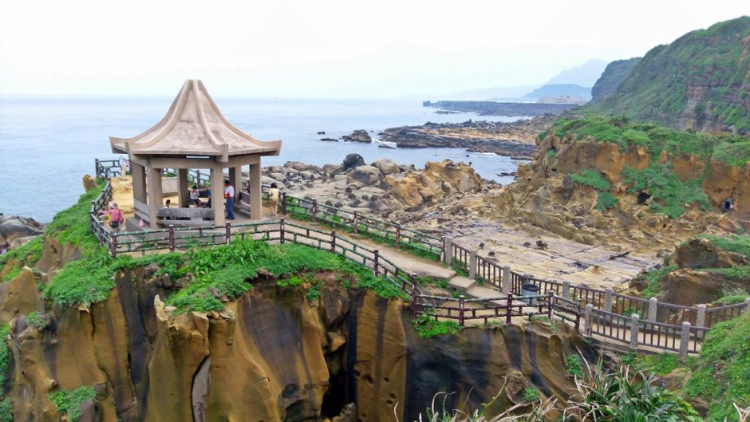
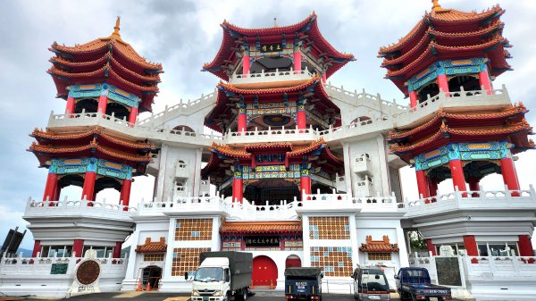

探索基隆
台灣的北部港口城市，以廟口夜市和和平島公園為主要景點，充滿海港風情。以下是基隆著名的景點:

基隆港
基隆港位於臺灣本島之北端，在富貴角與鼻頭角中間。 港之東、西、南三面層巒環抱，港口向西北開敞，而向西南灣入內港，成一長約2,000公尺，寬約400公尺之狹長水道，兼具軍港、商港等多種功能，為北臺灣的優良港灣。

正濱漁港
正濱漁港位於和平島南方，是歷史悠久的老漁港，早在西元1934年年由日本人創建，日治時期為台灣第一大港，曾為繁榮極盛的漁貨商港，是早期帶動基隆漁港興盛的主要功臣

和平島
和平島是座落於東海的島嶼，位處基隆市中正區，基隆港東北方，是距離臺灣最近的島嶼，相隔僅有75公尺，其以臺灣第一座跨海大橋「和平橋」連接。 島上的原住民巴賽族稱此島為「tuman」，漢人入墾後則稱為「大雞籠嶼」或「大雞籠山」。

中正公園
基隆中正公園在基隆港東側山丘上，依山建築，草木扶疏，是市民平日休閒的最佳去處。中正公園的正門位於信二路上，可拾階而上，或由側邊的斜坡步行而上。 公園本身共分成三層，第一層有涼亭、棋藝中心以及運動休閒設施，假日常吸引大批人潮來此遊玩。第二層則為「主普壇」的所在地。每年基隆中元普渡的祭典就是在這裡舉行的，屆時人山人海，場面十分壯觀。